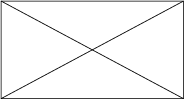

Los Fundadores del Sueño Arquitectónico
Quienes lo hicieron posible
Blanca Vergara
Hija de José Francisco Vergara, fundador de Viña del Mar. Donó a la Ilustre Municipalidad de Viña del Mar los terrenos adecuados para llevar a cabo la construcción de un lugar que promoviera el espectáculo y las artes.
Renato Schiavon
Arquitecto italiano, participó en importantes proyectos arquitectónicos en Viña del Mar. Es conocido por su colaboración con Landoff en la construcción del Teatro Municipal de Viña del Mar, aportando a la planificación y edificación de este monumento cultural.
Aquiles Landoff
Arquitecto reconocido en Chile, jugó un importante papel en la construcción del Teatro Municipal de Viña del Mar. Fue responsable del diseño arquitectónico del teatro, el cual destaca por su estilo neoclásico.
Inauguración
El Teatro Municipal de Viña del Mar fue inaugurado el 11 de octubre de 1930 por el presidente Carlos Ibáñez del Campo y el alcalde Manuel Ossa Saint-Marie. La ceremonia de apertura destacó la actuación de la Compañía Lírica Italiana, que interpretó la canción nacional y la ópera "Thais" del compositor francés Jules Massenet. Al día siguiente, el periódico El Mercurio elogió el diseño del teatro, describiéndolo como un "estilo de construcción genuinamente latino, corintio grecorromano de imponente clasicidad, sencilla y severa elegancia (...) una obra digna de los edificios que adornan las grandes ciudades"
Monumento Nacional
Esta imagen muestra una perspectiva del teatro desde el exterior, destacando su diseño arquitectónico y su elegancia neoclásica que lo caracteriza como un monumento histórico en Viña del Mar.